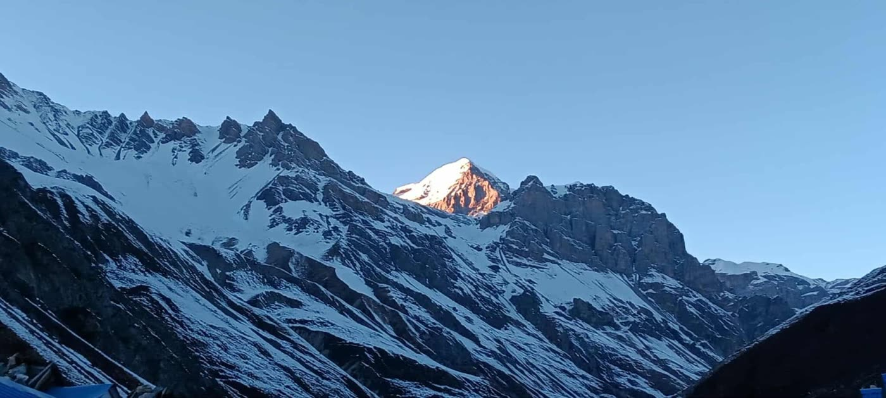
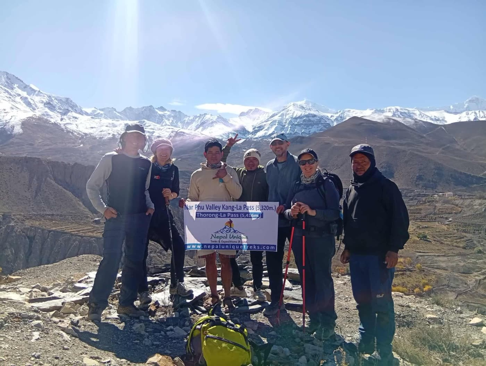
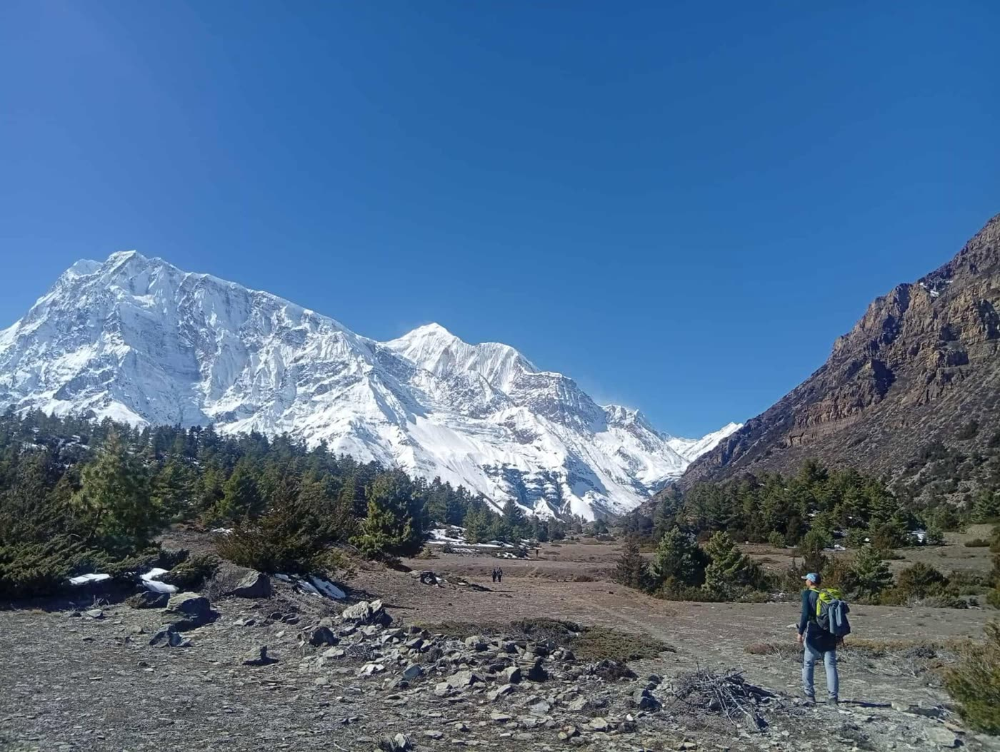
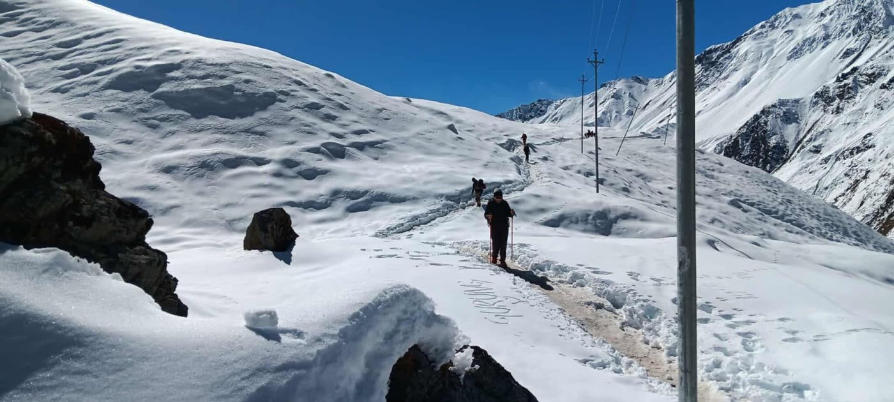
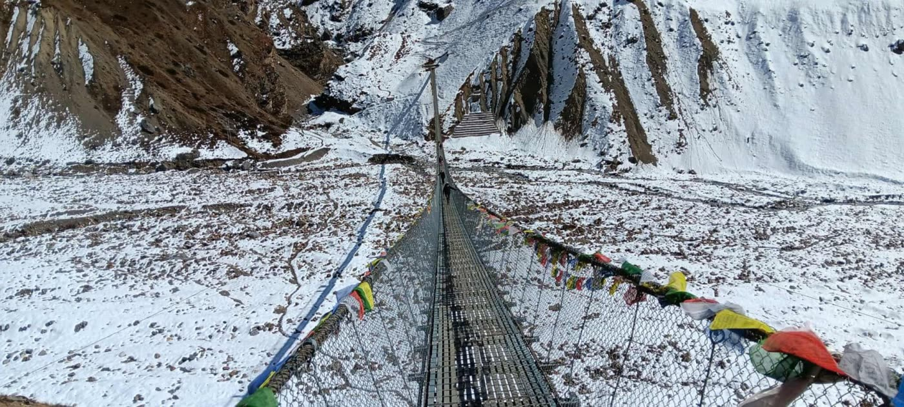

Thorong La Pass Trek
The Thorong La Pass Trek is one of the most spectacular high-altitude adventures in Nepal, taking trekkers through the diverse landscapes, traditional villages, and dramatic Himalayan scenery of the Annapurna Region Trekking. Located at an elevation of 5,416 meters (17,769 feet), Thorong La Pass is the highest point of the classic Annapurna Circuit Trek and offers an unforgettable crossing between the Manang Valley and the sacred pilgrimage destination of Muktinath.





Key Trip Facts
Trek Overview
Trip Highlights
Thorong La Pass Trek Overview
The Thorong La Pass Trek is one of the most spectacular high-altitude adventures in Nepal, taking trekkers through the diverse landscapes, traditional villages, and dramatic Himalayan scenery of the Annapurna Region Trekking . Located at an elevation of 5,416 meters (17,769 feet), Thorong La Pass is the highest point of the classic Annapurna Circuit Trek and offers an unforgettable crossing between the Manang Valley and the sacred pilgrimage destination of Muktinath.
This adventure is an excellent choice for travelers looking for authentic Trekking in Nepal and challenging Hiking in Nepal. The route combines beautiful mountain scenery, diverse cultures, ancient monasteries, dramatic valleys, alpine landscapes, and traditional Himalayan settlements.
Annapurna Region Trekking
The Annapurna region is among Nepal's most popular trekking destinations because of its extraordinary combination of natural beauty and cultural diversity. Annapurna Region Trekking offers everything from relatively short village hikes to demanding high-altitude adventures.
The Thorong La Pass via Manang route is particularly impressive. Trekkers gradually travel from lower valleys into the high Himalayan environment, passing through villages such as Dharapani, Chame, Pisang, Manang, and Yak Kharka before reaching Thorong Phedi and crossing Thorong La Pass.
The journey then descends toward Muktinath Temple, one of Nepal's most important pilgrimage sites, before continuing through the distinctive landscapes of the Mustang Region Trek.
Thorong La Pass via Manang
One of the major attractions of this trek is the gradual approach to Thorong La through Manang Village. Manang is a traditional Himalayan settlement surrounded by spectacular peaks and is an important acclimatization point on the Annapurna Circuit.
Spending time in Manang allows trekkers to explore the village, visit monasteries, interact with local communities, and prepare physically for the high-altitude crossing. The landscape changes dramatically as the trail climbs higher from green forests and rivers to dry valleys, rocky terrain, and snow-covered mountains.
Annapurna Circuit Trek with Tilicho Lake
Trekkers who want an even more rewarding Himalayan experience can combine the Annapurna Circuit Trek with Tilicho Lake. Tilicho Lake, situated at approximately 4,919 meters, is one of the world's highest-altitude lakes. Adding Tilicho Lake creates a longer and more challenging itinerary, but it provides spectacular scenery and an opportunity to explore another remarkable part of the Manang region before continuing toward Thorong La Pass.
For travelers with limited time, the standard Annapurna Circuit can be shortened by using road transportation on selected sections.
Muktinath Temple
After crossing Thorong La Pass, the trail descends toward Muktinath Temple, a sacred pilgrimage destination revered by both Hindus and Buddhists.
The area surrounding Muktinath combines religious significance with extraordinary Himalayan scenery. The famous natural flame, temples, shrines, and 108 water spouts make Muktinath an important cultural highlight of the trek.
The transition from the high alpine landscape around Thorong La to the dry, dramatic landscapes of Mustang makes this section particularly memorable.
Gurung Villages and Himalayan Culture
The lower sections of the Annapurna trekking routes pass through traditional Gurung Village communities where travelers can experience local hospitality, architecture, food, customs, and mountain lifestyles.
The region is culturally diverse, with Gurung, Magar, Thakali, Tibetan-influenced, and other Himalayan communities living along different sections of the trekking routes. For travelers interested in culture as well as mountains, the trek provides a wonderful opportunity to experience rural Nepal beyond the major tourist cities.
Comparing Annapurna Trekking Options
The Annapurna region offers trekking experiences for different levels of fitness and available time:
| Trek | Best For |
|---|---|
| Luxury Ghorepani Ghandruk Trek | Comfortable Annapurna experience with upgraded accommodation |
| Annapurna Circuit Trek | Complete Himalayan journey around the Annapurna massif |
| Annapurna Circuit Trek with Tilicho Lake | Circuit trek combined with high-altitude Tilicho Lake |
| Annapurna Base Camp Trek | Reaching the spectacular Annapurna Sanctuary |
| Annapurna Mini Trek | Short Himalayan trekking experience |
| Short Annapurna Base Camp Trek | Travelers with limited time |
| Ghorepani Poon Hill Trek | Sunrise views and moderate trekking |
| Ghorepani Ghandruk Trek | Short cultural and mountain-view trek |
Trekking Guide and Permits
A professional Trekking Guide can make the Thorong La Pass Trek safer and more enjoyable, particularly because the route reaches more than 5,400 meters.
Trekkers should be properly prepared for altitude, changing weather, long walking days, and the demanding Thorong La crossing. A licensed guide can assist with navigation, accommodation, local communication, acclimatization, and emergency coordination.
The trek also requires the appropriate the Annapurna Conservation Area Permit (ACAP), along with the applicable trekking registration requirements.
Peak Climbing in the Annapurna Region
The Annapurna region is not only famous for trekking but also offers exciting opportunities for Peak Climbing in Annapurna Region.
Experienced mountaineers can consider peaks such as:
Chulu West Peak Climbing
- Pisang Peak Climbing
- Chulu East Peak
Other permitted climbing peaks in the Annapurna region
For travelers interested in technical Himalayan adventures, Peak Climbing in Nepal provides opportunities to combine trekking with mountaineering under the supervision of experienced climbing guides.
Why Choose Thorong La Pass Trek?
The Thorong La Pass Trek is ideal for travelers who want to experience the diversity of the Annapurna Himalayas in a single journey. The trek combines:
- Thorong La Pass at 5,416 m
- Spectacular Annapurna and Dhaulagiri mountain views
- Traditional Manang Village
- Thorong Phedi and high-altitude landscapes
- Sacred Muktinath Temple
- Traditional Gurung and Himalayan villages
- Diverse landscapes from subtropical forests to alpine terrain
- Tibetan-influenced Himalayan culture
- Annapurna Conservation Area
- Opportunities to combine the trek with Tilicho Lake
- A challenging and rewarding Himalayan adventure
Whether you choose the classic Annapurna Circuit Trek, Annapurna Circuit Trek with Tilicho Lake, Annapurna Base Camp Trek, Ghorepani Poon Hill Trek, or another Annapurna adventure, the region offers some of the finest experiences for Trekking in Nepal.
Thorong La Pass Trek Itinerary: Day by Day
12 Days program for Thorong La Pass Trek. Daily timings and sequences remain flexible according to weather, flight operations, and group pace.
Day 1: Arrival in Kathmandu (1,400 m / 4,593 ft)
Approx. 1,400 m / 4,593 ft
Upon your arrival at Tribhuvan International Airport in Kathmandu, our representative will welcome you and transfer you to your hotel. After check-in, you can rest and recover from your journey. Depending on your arrival time, you may have an opportunity to explore the surrounding area of Kathmandu. In the evening, your trekking team will provide a briefing about the Thorong La Pass Trek, including the route, accommodation, meals, safety procedures, and preparation for the journey.
Day 2: Drive from Kathmandu to Dharapani (1,860 m / 6,102 ft)
Approx. 1,860 m / 6,102 ft
After breakfast, begin the journey toward the Annapurna region by road. The drive takes you through scenic countryside, rivers, terraced hills, forests, and traditional settlements. The route gradually leaves the Kathmandu Valley and follows the highway toward the western and central hills before continuing toward the Marsyangdi Valley. As you approach Dharapani, the scenery becomes increasingly mountainous. Dharapani is an important settlement on the Annapurna Circuit Trek and marks the beginning of the more traditional trekking environment.
Day 3: Trek from Dharapani to Chame (2,710 m / 8,891 ft)
Approx. 2,710 m / 8,891 ft
Today your Annapurna Region Trekking adventure officially begins. The trail follows the Marsyangdi River through pine and fir forests, passing several traditional villages along the way. You will gradually gain elevation while enjoying views of surrounding mountains. The trail passes through areas such as Bagarchhap and Danaque before reaching Chame, the administrative center of Manang District. Chame offers beautiful views of Lamjung Himal, Annapurna II, and other surrounding peaks. You can also explore the village and enjoy the natural hot springs near the Marsyangdi River.
Day 4: Trek from Chame to Pisang (3,300 m / 10,827 ft)
Approx. 3,300 m / 10,827 ft
Leaving Chame behind, the trail continues through forests and narrow valleys toward Pisang. The landscape gradually changes as you climb higher into the drier upper Manang region. Along the route, you will encounter dramatic rock formations and increasingly impressive views of the Annapurna range. The trail eventually reaches Pisang, where you can explore the traditional village and its Buddhist cultural features. There are two main areas of Pisang—Lower Pisang and Upper Pisang. Upper Pisang provides an excellent location for enjoying mountain views.
Day 5: Trek from Pisang to Manang (3,540 m / 11,614 ft)
Approx. 3,540 m / 11,614 ft
Today is one of the most scenic days of the Annapurna Circuit Trek. You will continue toward Manang through the drier upper valley, with spectacular views of the Annapurna mountains. The route can follow either the lower trail or the more scenic upper route through villages such as Ghyaru and Ngawal, depending on trail conditions and the itinerary. The upper route provides excellent Himalayan scenery and a closer look at traditional mountain villages influenced by Tibetan Buddhist culture. You eventually arrive at Manang, one of the most important settlements on the Annapurna Circuit.
Day 6: Acclimatization Day in Manang
Approx. 3,540 m / 11,614 ft
Today is dedicated to acclimatization. Rather than simply resting all day, you can take a short hike around Manang and nearby viewpoints to help your body adapt to the increasing altitude. You can explore the village, visit monasteries, walk toward nearby viewpoints, and enjoy magnificent views of Gangapurna and the surrounding Himalayan peaks. Proper acclimatization is particularly important before continuing toward Thorong La Pass.
Day 7: Trek from Manang to Yak Kharka (4,050 m / 13,287 ft)
Approx. 4,050 m / 13,287 ft
After acclimatization in Manang, the trail continues toward the high-altitude settlement of Yak Kharka. The landscape becomes increasingly alpine, with fewer trees and more open mountain terrain. The trail climbs gradually through the Marsyangdi Valley while offering impressive views of the surrounding peaks. As you approach Yak Kharka, the effects of altitude become more noticeable, so maintaining a slow and comfortable pace is important.
Day 8: Trek from Yak Kharka to Thorong Phedi (4,450 m / 14,600 ft)
Approx. 4,450 m / 14,600 ft
Today's trek takes you closer to the famous Thorong La Pass. The trail continues through a rugged high-altitude landscape toward Thorong Phedi, the traditional base for the pass crossing. The walk is relatively short compared with some other days, allowing you to conserve energy for the demanding crossing ahead. Depending on trail and accommodation conditions, some itineraries may use Thorong High Camp instead. Your trekking team will select the most appropriate overnight location based on weather, health, and trail conditions.
Day 9: Cross Thorong La Pass (5,416 m / 17,769 ft) and Trek to Muktinath (3,800 m / 12,467 ft)
Approx. 3,800 m / 12,467 ft
Today is the highlight of the entire Thorong La Pass Trek. You will start early in the morning for the challenging ascent toward Thorong La Pass at 5,416 meters. The climb can be physically demanding because of the high altitude and cold conditions, but the spectacular Himalayan scenery makes the effort worthwhile. After reaching the summit, celebrate this incredible achievement and take time to enjoy the panoramic mountain surroundings before beginning the long descent toward Muktinath. Muktinath is a sacred pilgrimage destination and holds deep religious importance for both Hindus and Buddhists. After reaching Muktinath, you can rest and explore the area if time and energy permit.
Day 10: Drive from Muktinath to Jomsom and Continue to Pokhara
Approx. 810 m / 2,657 ft
After breakfast, leave Muktinath and travel through the spectacular Kali Gandaki Valley toward Jomsom. Depending on the chosen itinerary and road conditions, the journey can continue toward Pokhara by road. The landscape changes dramatically after crossing Thorong La, with dry hills, cliffs, river valleys, and settlements characteristic of the Mustang region. As you descend toward lower elevations, the climate becomes warmer and vegetation increases. Arriving in Pokhara provides a relaxing transition from the high Himalayan environment to the peaceful lakeside city.
Day 11: Drive or Fly from Pokhara to Kathmandu
Approx. 1,400 m / 4,593 ft
After breakfast, return to Kathmandu by tourist vehicle. The road journey provides another opportunity to enjoy Nepal's countryside, terraced hills, rivers, and traditional settlements. If you choose to fly USD$120 extra, the short flight offers aerial views of the Himalayan landscape. Upon arrival in Kathmandu, transfer to your hotel and enjoy your final evening in Nepal.
Day 12: International Departure
Approx. 1,400 m / 4,593 ft
Your Thorong La Pass Trek officially concludes today. Our representative will transfer you to Tribhuvan International Airport according to your international flight schedule. Take home unforgettable memories of crossing Thorong La Pass, exploring the Annapurna region, experiencing Himalayan culture, and completing one of Nepal's classic trekking adventures.
What is Included (Regular Package)
What is Excluded
Booking Dates & Availability
Packing List for Thorong La Pass Trek
Essential Info: Down jackets and sleeping bags can be rented/arranged per package inclusions.High-Altitude Trail Gear (6 items)
Cold-Weather Layering System (5 items)
Sleep, Health & Permits (3 items)
Read before you book: Thorong La Pass Trek
Practical logistics derived directly from this package's route facts, inclusions, and elevation profile.
Accommodation & Meals (Hotel, Lodge & Tea House)
Accommodation follows the package grade (Hotel, Lodge & Tea House) in Kathmandu and along the Annapurna route. Check your package Includes section for included meals and Kathmandu hotel nights.
Permits & Local Logistics
Transportation is arranged via Car, Van Bus. Applicable permits listed in the package inclusions are arranged by Nepal Unique Treks prior to departure.
Route Difficulty & Elevation (5416 m)
Thorong La Pass Trek is rated Adventurous with a maximum elevation of 5416 m. Follow your guide's pacing and stay hydrated throughout the 12 Days itinerary.
Best Time to Visit (Autumn, Spring and Winter)
Recommended operating season on the source page: Autumn, Spring and Winter. Additional official notes from the source page follow below.
Traveller Useful Information
The best time for Thorong La Pass Trek is during spring (March to May). Autumn (September to November). These seasons usually bring weather, clearer mountain views and easier trekking across the Annapurna region. They are especially good for crossing the Thorong La Pass at 5,416 meters (17,769 feet).
Spring (March to May)
Spring is one of the beautiful seasons for Thorong La Pass Trek. The days are usually easy to walk on mountain views are often very clear. The lower parts of the trail turn bright with blooming rhododendrons.
March can still bring mornings and occasional snow at higher heights. April and May are usually warmer. Give great conditions for trekking through Manang crossing Thorong La Pass and going toward Muktinath.
Why trek in spring?
- daytime temperatures
- Excellent views of the Annapurna and Dhaulagiri ranges
- Rhododendron forests in bloom
- Generally favorable conditions for crossing Thorong La Pass
- Good visibility for mountain photography
Autumn (September to November)
Autumn is considered the best trekking season for Thorong La Pass Trek. After the monsoon the air is usually clearer the landscapes are fresh. The mountain views can be spectacular.
October is particularly popular because of its weather and excellent visibility. November remains a month but temperatures slowly become colder especially in the mornings and at higher heights.
Why trek in autumn?
- Stable and generally dry weather
- Himalayan views
- Excellent visibility
- Comfortable trekking conditions
- Ideal season for the Annapurna Circuit and Thorong La Pass
Can You Trek Thorong La Pass in Winter?
Winter trekking is possible for trekkers but December to February brings much colder temperatures and a higher chance of heavy snowfall around Thorong La Pass. Snow can make Thorong La Pass difficult or temporarily closed.
If you attempt Thorong La Pass Trek in winter you should be fully. Stay flexible because weather and trail conditions can change quickly.
Can You Trek Thorong La Pass During the Monsoon?
The main monsoon period, June to August is usually less good for Thorong La Pass Trek. Rain can hit the middle parts of the Annapurna Circuit while clouds may reduce mountain views.
However the Manang and Mustang sides are partly in the rain shadow so some sections can stay relatively dry. So landslides, muddy paths leeches, in wet spots and transport problems can make the journey less predictable.
Overall recommendation: For the reliable experience plan your Thorong La Pass Trek in October, April, May late September or early November depending on your preferred weather and trekking conditions.
The Thorong La Pass Trek is considered a trek because of its high altitude, long walking days, steep ascents and descents and the demanding crossing of Thorong La Pass at 5,416 meters. It is not a mountaineering expedition but good physical preparation and proper acclimatization are essential.
The difficulty comes primarily from altitude than technical climbing. Trekkers walk on established mountain trails. The combination of thin air, cold temperatures, steep terrain and a long summit-day journey makes the pass crossing physically demanding.
Main Factors That Make the Trek Challenging
1. High Altitude
Altitude is the challenge. The route gradually climbs from the valleys to the high mountain environment of Manang before reaching Thorong La Pass.
As elevation increases the amount of oxygen decreases. Proper acclimatization, an ascent, adequate hydration and a sensible walking pace are therefore important.
2. Thorong La Pass Crossing
Crossing Thorong La is the demanding part of the trek. The pass stands at 5,416 meters (17,769 feet). Usually involves an early-morning start from Thorong Phedi or High Camp.
The ascent can be slow because of the altitude and the descent toward Muktinath is also steep and physically tiring.
3. Long Walking Days
Some trekking days can involve 6–9 hours of walking depending on the itinerary trail conditions, walking speed and acclimatization schedule.
The pass-crossing day is particularly demanding because trekkers gain elevation before descending on the other side.
4. Cold and Unpredictable Mountain Weather
Weather at altitude can change rapidly. Winds, freezing temperatures, snowfall and reduced visibility may occur around Thorong La, particularly outside the main trekking seasons.
5. Steep Ascents and Descents
The route includes a mixture of trails, rocky paths steep uphill sections and long descents. Good leg strength, balance and endurance are helpful.
Is Thorong La Pass Trek Suitable for Beginners?
Yes, fit and well-prepared beginners can complete the Thorong La Pass Trek particularly when they choose an itinerary with acclimatization days and trek at a comfortable pace.
Previous altitude trekking experience is helpful but not mandatory. However beginners should not underestimate the trek. Regular cardiovascular exercise, hill walking, stair climbing and endurance training before the trip can make the experience considerably easier.
Physical Preparation for Thorong La Pass Trek
Start preparing weeks before departure. Useful training includes:
- Long-distance walking and hiking
- Uphill. Downhill walking
- Stair climbing
- Cardiovascular exercise
- Leg-strengthening exercises
- Gradually increasing walking duration
- Practicing with a daypack
The objective is not speed. Consistent endurance and the ability to walk for hours at altitude are more important.
Altitude Safety
Altitude sickness is one of the concerns on the Thorong La Pass Trek. Symptoms such as headache, nausea, unusual tiredness, dizziness or loss of appetite should be taken seriously.
A responsible trekking itinerary should include acclimatization. Avoid unnecessarily rapid altitude gain. If symptoms become severe or worsen descending to an elevation is the safest response.
For this reason trekkers should follow their guides recommendations stay hydrated walk slowly and avoid trying to push through altitude-related symptoms.
Thorong La Pass Trek Difficulty Rating
Overall difficulty: Challenging
| Factor | Difficulty |
|---|
| Physical Fitness | Moderate to Challenging |
| Altitude | Challenging |
| Technical Climbing | Low |
| Walking Duration | Moderate to Challenging |
| Pass Crossing | Challenging |
| Experience Required | Helpful but not mandatory |
| Best for | Fit hikers and experienced trekkers |
With proper acclimatization, physical preparation, suitable equipment and an experienced trekking guide the Thorong La Pass Trek is an rewarding Himalayan adventure.
Nepal Unique Treks Recommendation
The Thorong La Pass Trek is ideal for travelers looking for an Annapurna Region Trekking experience without technical mountaineering. The journey combines Himalayan landscapes, traditional mountain villages, Buddhist culture, diverse terrain and the unforgettable achievement of crossing one of Nepals highest trekking passes.
For the experience choose the spring or autumn trekking seasons prepare your fitness beforehand allow adequate time, for acclimatization and take altitude and weather conditions seriously.
Accommodation on the Thorong La Pass Trek is generally provided in local tea houses and mountain lodges along the Annapurna Circuit trail. These teahouses offer a welcoming place to rest after a day of hiking. They also give trekkers a chance to experience Himalayan hospitality.
In Kathmandu and Pokhara accommodation is normally provided in a hotel according to the selected trekking package. During the trek rooms are usually on a twin-sharing basis. Most teahouses have rooms with beds, mattresses, blankets and shared bathrooms. At elevations facilities become more basic and private rooms may not always be available.
The food available along the Annapurna Circuit Trek is surprisingly varied. Popular meals include dal bhat, noodles, pasta, fried rice, soups, potatoes, Tibetan bread, momo, eggs, porridge and other simple local and international dishes. (Dal bhat) rice, lentils, vegetables and curry is especially popular among trekkers because it is filling and provides energy for long walking days.
Breakfast usually includes options such as porridge, eggs, bread, pancakes, Tibetan bread, tea or coffee. Lunch and dinner commonly include dal bhat, noodles, rice, pasta, soup, vegetables or other available meals.
At elevations food choices may become more limited because supplies must be transported from lower villages. Trekkers should therefore remain flexible. Choose nutritious easily digestible meals.
Drinking Water
Safe drinking water is important throughout the Thorong La Pass Trek. Trekkers can purchase water or use treated water from local sources. Carrying a water bottle and using water purification tablets, a filter or another reliable purification method is recommended.
Staying properly hydrated is particularly important, at altitude because dehydration can make trekking more difficult and may worsen altitude-related symptoms.
A packing list for the Thorong La Pass Trek should have clothing that can handle changing temperatures, good trekking gear, sun protection, personal medicine and important papers. The weather in the mountains can change quickly so it is important to get ready for both hot and cold weather.
Clothing
- Moisture-wicking trekking T-shirts
- Thermal base layers
- Fleece jacket or warm middle layer
- Down jacket
- Waterproof and windproof jacket
- Trekking trousers
- Warm trekking pants
- Thermal underwear
- Underwear and socks
- Warm woolen hat
- Sun hat or cap
- Lightweight gloves
- Warm insulated gloves
- Comfortable sleepwear
Footwear
- Good-quality trekking boots with ankle support
- Lightweight camp shoes or sandals
- pairs of trekking socks
- Gaiters especially when there is snow
- Backpack & Bags
- A comfortable trekking backpack, about 40–50 liters
- Small daypack if porters are carrying the main bag
- Waterproof backpack cover
- Duffel bag for trekking gear
- Dry bags or waterproof packing bags
- Sleeping & Personal Items
- Sleeping bag that is good for cold mountain weather
- Headlamp with extra batteries
- Trekking poles
- Sunglasses that have good UV protection
- Water bottles or a way to carry water
- Water purification tablets or a filter
- Quick-drying towel
Toiletries
- Sunscreen and lip balm with SPF
- Personal hygiene items
- First-Aid & Personal Health Items
- Basic first-aid kit
- Personal medicines that are needed
- Treatment for blisters
- Pain relief medicine
- Oral rehydration salts
- Medicine for common travel problems
- For medicines related to altitude trekkers should talk to a medical professional before the trip instead of taking medicine on their own.
Important Documents & Electronics
- Passport
- Trekking permits that are needed
- Travel insurance papers
- Emergency contact details
- Money, in rupees
- Mobile phone
- Power bank
- Charging cords
- Camera and extra batteries if needed
- Optional Items
- Binoculars
- Lightweight towel
- Book or e-reader
- Snacks and energy bars
- Small thermos
- Reusable hand warmers
Packing tip: Do not bring things that are not needed. A lighter backpack is easier to carry during walks up and down especially when crossing the Thorong La Pass.
Safety and proper acclimatization are essential for a Thorong La Pass Trek. The highest point of the Thorong La Pass Trek 5,416 meters (17,769 feet). The combination of altitude cold temperatures, strong winds and strenuous walking can make the Thorong La Pass crossing demanding.
The Thorong La Pass Trek itself does not require mountaineering skills but Thorong La Pass trekkers need reasonable fitness and should respect the effects of altitude.
1. Acclimatize Properly
A gradual ascent gives the body time to adapt to decreasing oxygen levels during the Thorong La Pass Trek. A well‑designed Annapurna Circuit Trek itinerary should include acclimatization and avoid unnecessarily rapid elevation gain.
Do not rush the Thorong La Pass Trek simply to arrive at Thorong La Pass sooner. Walking slowly and maintaining a pace is generally more effective at high altitude.
2. Recognize Symptoms of Altitude Sickness
Altitude sickness can affect anyone regardless of age or previous Thorong La Pass Trek experience.
Possible symptoms include:
- Headache
- Dizziness
- Nausea
- tiredness
- Loss of appetite
- Difficulty sleeping
- Shortness of breath during exertion
Mild symptoms should be reported to the Thorong La Pass Trek guide and monitored carefully. If symptoms become severe worsen or include breathing or neurological problems do not continue ascending. Descending to an altitude and seeking medical assistance may be necessary.
3. Stay Hydrated
Drink water regularly throughout the Thorong La Pass Trek day. Avoid alcohol because it can contribute to dehydration and interfere with acclimatization.
Warm soups, tea and other fluids can also help maintain hydration in the mountain environment of the Thorong La Pass Trek.
4. Start Early for Thorong La Pass
The Thorong La Pass crossing is normally started early in the morning. Early departure helps Thorong La Pass trekkers take advantage of stable morning conditions and allows sufficient time for the ascent and descent before afternoon weather can become more difficult.
The exact departure time depends on the season, weather, trail conditions and the Thorong La Pass Trek itinerary.
5. Prepare for Changing Weather
Mountain weather can change rapidly. Carry a jacket, warm layers, gloves, a hat and sun protection even when the morning begins with clear weather during the Thorong La Pass Trek.
At Thorong La, winds, cold temperatures, snow and reduced visibility can occur, particularly outside the main trekking seasons of the Thorong La Pass Trek.
6. Use Trekking Poles
Trekking poles can provide support on steep uphill sections and long descents of the Thorong La Pass Trek. They are particularly helpful when crossing uneven, rocky or potentially snowy sections of the trail.
7. Protect Yourself From the Sun
UV exposure is stronger at altitude of the Thorong La Pass Trek. Wear sunglasses, apply sunscreen regularly. Protect exposed skin with appropriate clothing and a hat.
8. Follow Your Guides Advice
An experienced trekking guide can monitor trail conditions, weather, walking pace and signs of altitude problems during the Thorong La Pass Trek. Thorong La Pass trekkers should communicate openly with the guide if they feel unwell or unusually tired.
The goal is not simply to reach Thorong La Pass but to complete the Thorong La Pass Trek safely and enjoy the landscapes, villages, culture and Himalayan scenery of the Annapurna region.
Essential Safety Rule
Never ignore altitude symptoms just because a fixed itinerary exists. Weather and health conditions should always take priority over reaching a destination, on a particular day of the Thorong La Pass Trek.
With preparation suitable equipment, gradual acclimatization, adequate hydration and responsible trekking practices the Thorong La Pass Trek can be a challenging but highly rewarding Himalayan adventure.
The Thorong La Pass Trek is one of the rewarding high-altitude adventures in Nepal combining spectacular Himalayan scenery, traditional mountain villages, diverse landscapes and the famous crossing of Thorong La Pass at 5,416 meters (17,769 feet). As a section of the Annapurna Circuit Trek the journey takes you from the lush valleys and terraced farmland of the lower Annapurna region into the dry and dramatic landscapes of Manang and Mustang.
Major Highlights of Thorong La Pass Trek
- Cross the Thorong La Pass (5,416 m / 17,769 ft) one of the worlds highest trekking passes.
- Experience the Annapurna Circuit Trek through diverse Himalayan landscapes.
- Enjoy views of Annapurna, Dhaulagiri, Manaslu, Nilgiri, Gangapurna and Tilicho Peak.
- Trek through the Manang Valley and traditional mountain settlements.
- Explore the rich villages of Chame, Pisang, Manang, Yak Kharka and Muktinath.
- Experience the combination of Tibetan Buddhist and Hindu cultures.
- Visit the Muktinath Temple, an important pilgrimage destination for both Hindus and Buddhists.
- Walk through landscapes ranging from subtropical forests to alpine meadows and high Himalayan terrain.
- Enjoy the changing scenery along the Thorong La Pass via Manang route.
- Discover Himalayan architecture, prayer wheels, mani walls, monasteries and chortens.
- Experience the arid landscapes of the Mustang region after crossing the pass.
- Relax in hot springs at Tatopani on itineraries that continue through the Kali Gandaki Valley.
- Explore Kagbeni, a settlement and gateway toward Upper Mustang.
- Enjoy warm Himalayan hospitality in traditional teahouses.
- Experience one of the memorable high-altitude trekking adventures, in Nepal.
Altitude Profile of Thorong La Pass Trek
Weather on Thorong La Pass Trek
Thorong La Pass Trek Route & Area Overview
Book This Trek
Contact our Kathmandu coordinators using the booking panel for private or fixed-group departures.
Trip Feedback
Explore verified traveller stories or leave feedback on Nepal Unique Treks.
Visit Nepal Unique Treks